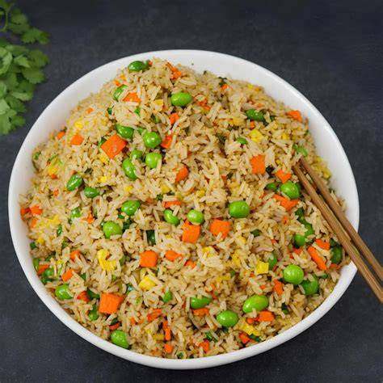

Home
Vegetable Fried Rice

Description
Vegetable fried rice is a quick and satisfying dish made by stir-frying cooked rice with vegetables, sauces,
and simple seasonings. It's a great way to use leftover rice and can be customized with whatever vegetables
you have at home.
Ingredients
- Cooked rice
- oil
- Garlic
- Onion
- Carrot
- Beans or peas
- Soy sauce
- Salt
- Black Pepper
- Spring Onions (optional)
Steps
- Heat oil in a pan over medium heat.
- Add garlic and onion and sauté until fragrant.
- Add chopped vegetables and cook until slightly tender.
- Add the cooked rice and mix well.
- Add soy sauce, salt, and pepper and stir until evenly combined.
- Garnish with spring onions and serve hot.